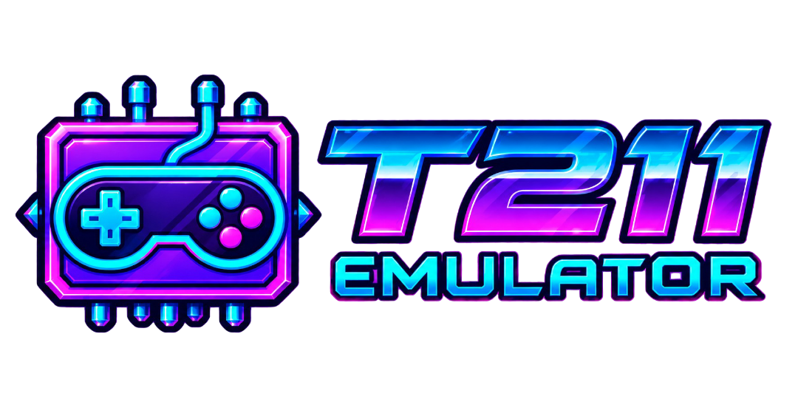
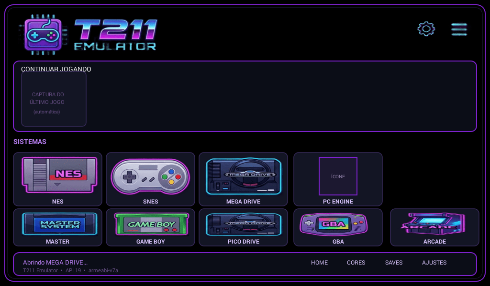

SEGA · 16-BIT
Mega Drive / Genesis
Genesis Plus GX e PicoDrive — duas opções, sem remover a que já funcionava.
PICO DRIVE · GENESIS PLUS GXUM PROJETO DE REAPROVEITAMENTO DIGITAL

O T211 Emulator nasceu para dar uma nova vida a um Galaxy Tab 3. Hoje, também é uma ideia para quem quer resgatar um aparelho antigo e continuar jogando com o que já tem.

NÃO ERA SUCATA. AINDA PODIA SER CONSOLE.
“Se o tablet ainda funciona, por que deixar os jogos para trás?”
Eu sou Master Miruma, desenvolvedor indie, músico e artista. Comecei o T211 Emulator para reaproveitar meu próprio Samsung Galaxy Tab 3 7.0 — um aparelho antigo que ainda podia virar uma ótima máquina de jogos retrô.
O projeto cresceu a partir daí. Tem gente que mantém um aparelho antigo por carinho ou curiosidade; tem gente que simplesmente ainda não pode trocar de dispositivo. Em ambos os casos, um equipamento que continua funcionando merece uma experiência pensada para ele.
Tecnologia antiga não precisa ser descartada só porque o mercado já seguiu adiante.
Não é uma interface moderna encolhida. É um frontend enxuto, adaptado ao Android antigo e ao hardware que o projeto quer aproveitar.
Estes sistemas e cores aparecem no estado atual do projeto. Compatibilidade e desempenho podem mudar de jogo para jogo.
Genesis Plus GX e PicoDrive — duas opções, sem remover a que já funcionava.
PICO DRIVE · GENESIS PLUS GXO Genesis Plus GX também reconhece ROMs SMS/Mark III.
GENESIS PLUS GXIntegrado com Beetle PCE Fast. ROMs comuns foram testadas no tablet.
BEETLE PCE FASTIntegrado com gpSP. Velocidade e imagem foram elogiadas; áudio segue em refinamento.
GPSPFB Alpha 2012 e MAME 2003. A escolha certa depende do título e dos testes reais.
FB ALPHA 2012 · MAME 2003“Integrado” não significa compatibilidade universal: o comportamento é avaliado por core e por jogo.
O objetivo é deixar o aparelho fazer o que sabe — sem obrigar todos os sistemas a caber na mesma configuração.
Botões virtuais ajustáveis em tamanho e opacidade, com layouts pensados para tablet.
Preserva a proporção informada pelo core ou permite preencher a tela por preferência.
O frontend lê o sample rate do sistema em execução, em vez de forçar uma taxa única para todos.
Salvar e carregar depende do suporte de serialização oferecido pelo core em uso.
O desenvolvimento é incremental: compilar, testar no tablet e ajustar a partir do que acontece de verdade.
Agora o trabalho é otimizar e refinar a experiência nos sistemas que já estão integrados, em vez de aumentar a lista sem testar.
PicoDrive foi adicionado como alternativa fluida para Mega Drive. No Arcade, títulos diferentes podem pedir FBA ou MAME. Um ajuste global nem sempre resolve todos.
Super Nintendo, PlayStation e Sega CD são ideias para avaliar numa etapa futura. Não fazem parte do suporte disponível nesta versão.
Save state confirmado no tablet. A gravação voltou a funcionar após uma correção de armazenamento; cada core ainda precisa oferecer suporte próprio para serialização.
O T211 é uma realização independente, apoiada em anos de trabalho aberto de muita gente.
Frontend Android, interface, integração para o SM-T211, embalagem do app e identidade visual do T211 Emulator.
Um obrigado especial às pessoas que criam e mantêm o ecossistema libretro e os projetos upstream usados aqui: Genesis Plus GX, PicoDrive, Beetle PCE Fast, gpSP, FB Alpha 2012 e MAME 2003. Esse trabalho torna possível levar bibliotecas clássicas a dispositivos modestos.
Cada core mantém seus próprios autores, avisos e licença. A licença PolyForm Noncommercial 1.0.0 diz respeito somente ao código original do frontend Android do T211 quando ele for publicado; ela não altera nenhuma licença upstream. Ler a licença.
Esta primeira publicação é apenas a página de apresentação: não inclui nem distribui APK, cores compilados, ROMs, BIOS, chaves de assinatura ou binários de terceiros.
UM TABLET. MUITAS HISTÓRIAS.
Conheça o projeto, acompanhe os próximos testes e ajude a manter a cena retrô viva — um aparelho antigo de cada vez.
Visitar o repositório